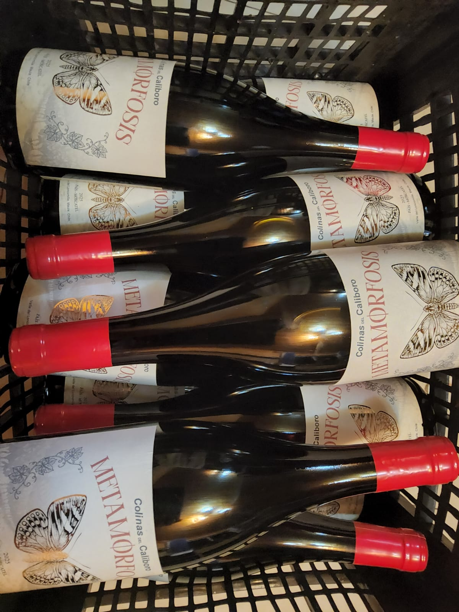

2025
Metamorfosis
País · Moscatel
De uvas provenientes de un viñedo de secano, manejado de forma tradicional y conducido en cabeza. Un vino de color rojo rubí intenso, con aromas de frambuesa, licor de cerezas y frutilla. Suave y elegante, con un final largo y una sensación cálida.
14,5% alc.
350 L